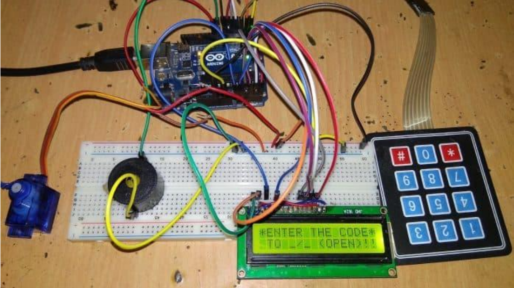

Connect the servo motor to the Arduino. The servo has three wires: power (usually red), ground (black or brown), and signal (yellow or white). Connect the power wire to the 5V pin on the Arduino. Connect the ground wire to a GND pin on the Arduino. Connect the signal wire to a digital PWM pin (e.g., pin 9).
Introduction
Welcome to the Smart Door Project. This project utilizes an Arduino Uno to create a smart door system that can be controlled remotely, monitor the door status, and enhance security.
Project Overview
Components Needed
- Arduino Uno
- Servo Motor or Electronic Lock
- Magnetic Door Sensor or Reed Switch
- PIR Motion Sensor (optional)
- Wi-Fi Module (ESP8266 or similar)
- Push Button (for manual override)
- LEDs (for status indication)
- Breadboard and Jumper Wires
- Power Supply
- Resistors (if needed for sensors and LEDs)
Step-by-Step Guide
Connect one end of the sensor to a digital pin (e.g., pin 2). Connect the other end to GND. If using a normally open sensor, you may need to add a pull-up resistor (10kΩ) between the digital pin and 5V.
Connect the VCC and GND pins of the PIR sensor to 5V and GND on the Arduino. Connect the output pin of the PIR sensor to a digital pin (e.g., pin 3).
Connect the ESP8266 to the Arduino. Make sure to use a level shifter if your module requires 3.3V logic levels. Connect VCC to 3.3V (or use an appropriate power supply for the ESP8266). Connect GND to GND. Connect TX of the ESP8266 to RX of the Arduino (pin 0). Connect RX of the ESP8266 to TX of the Arduino (pin 1).
Connect one leg of the push button to a digital pin (e.g., pin 4). Connect the other leg to GND. Use a pull-up resistor (10kΩ) between the digital pin and 5V if needed.
Connect the anode of each LED to a digital pin through a current-limiting resistor (e.g., 220Ω). Connect the cathode to GND.
Arduino Code
#include <Servo.h>
Servo myservo;
int doorSensorPin = 2;
int motionSensorPin = 3;
int buttonPin = 4;
int ledPin = 5;
int lockPosition = 0;
void setup() {
pinMode(doorSensorPin, INPUT);
pinMode(motionSensorPin, INPUT);
pinMode(buttonPin, INPUT_PULLUP);
pinMode(ledPin, OUTPUT);
myservo.attach(9);
myservo.write(lockPosition); // Initially locked
Serial.begin(9600);
}
void loop() {
int doorStatus = digitalRead(doorSensorPin);
int motionStatus = digitalRead(motionSensorPin);
int buttonStatus = digitalRead(buttonPin);
if (doorStatus == HIGH) {
digitalWrite(ledPin, HIGH); // Door is open
} else {
digitalWrite(ledPin, LOW); // Door is closed
}
if (buttonStatus == LOW) {
lockPosition = (lockPosition == 0) ? 90 : 0; // Toggle lock position
myservo.write(lockPosition);
delay(1000); // Debounce delay
}
if (motionStatus == HIGH) {
// Add your motion detection code here
}
// Add Wi-Fi communication code here to handle remote locking/unlocking
delay(100); // Short delay to stabilize sensor readings
}